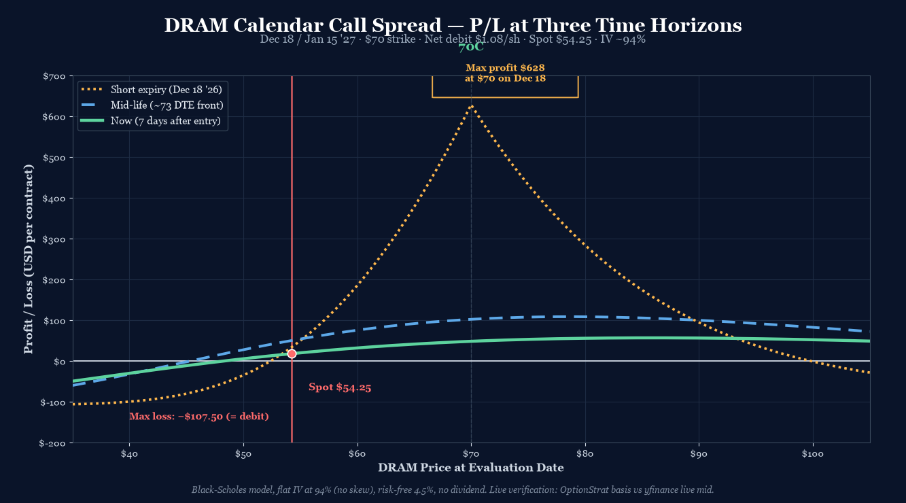
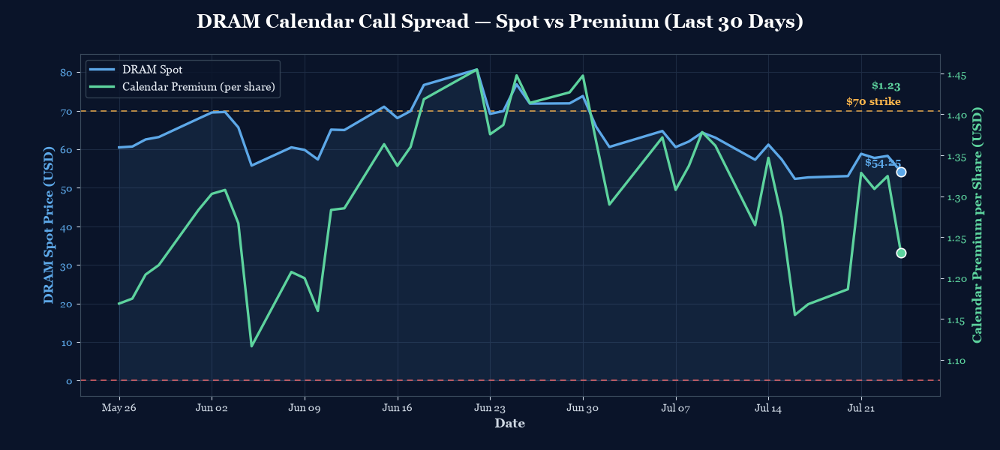

P/L Curve — Three Time Horizons

Max Profit
~$628
at $70 on Dec 18 (est.)
Max Loss
$107.50
defined risk = net debit
Net Debit
$1.08
1 calendar spread · $107.50 total
Spot / IV
$54.25
DRAM @ entry · IV ~94%
Why This Structure
The calendar expresses a theta-harvest view with a defined strike: the underlying needs to stay near $70 at short-leg expiry for the trade to pay out. The structure collects the rich front-month IV premium while funding the longer-dated leg, with a defined-risk profile bounded by the net debit.
Why a calendar over a diagonal? The diagonal (long 50C / short 70C, as in the 2026-07-15 DRAM diagonal) captures the same front-month premium plus a wider strike spread that adds intrinsic value to the long leg. The trade-off is bigger debit ($8.38 vs $1.08) and a different P&L shape — the diagonal has a defined upside plateau at $70 (max profit $1,231), while the calendar has a tent-shaped peak exactly at $70 with max profit ~$628. The calendar is the more pure theta play; the diagonal is the more directional play with theta help.
Why not a vertical spread? A 50/70 or 60/70 vertical would express the directional view (DRAM rallies to $70) without the time-decay component. But it would need DRAM to actually reach $70 by Dec 18 for max profit — and DRAM would have to do so in 147 days. The calendar says "DRAM can be anywhere within ±$2 of $70 by Dec 18" and still pays. That's a much wider profit zone, at the cost of a smaller absolute max profit.
Why $70 strike specifically? The strike sits roughly 0.5σ above the current $54.25 spot (at 94% IV over 147 days, σ-distance ≈ (70 − 54.25) / (54.25 × 0.94 × √(147/365)) ≈ 0.34σ). That's inside the playbook's 0.3–0.5σ band for calendars (Section 4 of the Playbook). Picking the strike closer to spot (say $60) would put the calendar's tent-peak inside DRAM's recent range, but the back-month time premium would be much smaller because $60 is closer to a likely ITM outcome. $70 captures the recovery view with maximum time-value asymmetry between the two legs.
Thesis
- Why DRAM, why now: DRAM has corrected 28% from its June peak ($80 → $54.25). The selloff is overdone relative to the underlying memory cycle — DRAM is the cleanest single-instrument way to express a memory-recovery view. The IV term structure (front 95%, back 94%) shows the market is pricing near-term event risk (earnings in late August, presumably) but not a sustained recovery — that's the asymmetry the calendar captures.
- Why calendar over alternatives: A long 70C Dec 18 alone costs $780 (less debit than the diagonal) but caps at $0 if DRAM is at $70 at expiry (back-month has zero intrinsic when both are at $70; the call is still $0 of intrinsic and time premium = strike only on at-the-money). A long 70C Jan 15 '27 alone costs $887.50 — more debit than the calendar and full directional exposure without theta help. A 50/70 vertical costs ~$5.50 debit with max profit of $14.50/share but requires DRAM to rally past $70 by Dec 18, not just reach it. The calendar wins on three axes: defined risk, theta harvest, and a wider profit zone (any DRAM close between roughly $68 and $72 at Dec 18 produces positive P&L).
- Why not the existing DRAM diagonal: The diagonal is the bigger directional play (long 50C has $4.25 of intrinsic today, DRAM at $54.25 vs $50 strike). The calendar is the smaller, more pure theta position. They overlap in thesis (memory recovery) but don't overlap in payoff shape. The diagonal wins if DRAM rallies hard; the calendar wins if DRAM grinds sideways into the strike. Holding both gives exposure to both outcomes without doubling the same directional exposure.
Risk
| Risk | Magnitude | Mitigation |
|---|---|---|
| DRAM stays well below $70 at Dec 18 | Up to full $107.50 loss | Stop at 2× debit ($215 cost to close); accept that calendars require proximity to strike |
| DRAM rallies past $80 at Dec 18 | Up to ~$80 loss past $80 (short leg ITM with no cap) | Stop before $80; the calendar is asymmetric above the strike — short leg goes ITM while long leg stays close to intrinsic-only |
| DRAM stays at $54.25 (no rally) | $107.50 loss (debit erodes via theta) | This is the thesis not playing out; close at 50% loss rule |
| Front-month IV crush (post-event) | ~$50–80/share loss on short leg value collapse | Front-month already rich (95% vs back 94%); crush risk is mostly priced in. Event window is ~Aug DRAM earnings — manage through or close early |
| Scenario 5: low liquidity (TIER 3 ETF) | Bid/ask spread ~$0.35 on front-month, $0.60 on back-month | Use limit orders; spreads already factored into debit |
| Scenario 6: dividend on underlying (rare for ETFs) | DRAM is an ETF; pays small ~$0.5/share annual distribution | Below early-assignment threshold for the short leg (which is OTM by $15.75) |
Position Payoff at Three Time Horizons
The chart above shows the position's P/L as a function of DRAM's price at three evaluation windows: now (7 days after entry), mid-life (74 DTE on the short leg), and at short-leg expiry (Dec 18, 2026). The three curves diverge in a classic calendar pattern — the now-curve (green solid) is shallowly tent-shaped, the mid-curve (blue dashed) is steeper as front-month theta accelerates, and the short-expiry curve (gold dotted) is the tallest tent peaking exactly at the $70 strike.
You can build and track this exact spread at Optionstrat with the ?ref=ventureprise link from your affiliate dashboard.
Read the chart:
- Spot $54.25 sits well below the strike ($70). At the current spot, the calendar is slightly positive (~+$18/contract now-curve, ~+$56/contract peak) because the back-month residual time value exceeds the front-month at this strike. The trade is currently a small gain, not a loss.
- The peak ($628) sits exactly at $70 at short-leg expiry. That's where the short leg expires worthless and the back-month retains ~28 DTE of time value at the strike.
- The curve falls off in both directions. Below $60, both legs have minimal intrinsic and the calendar is mostly the debit (full loss). Above $80, the short leg's intrinsic liability starts to dominate — by $80, the short leg is $10 ITM while the long leg is $10 ITM, so they cancel out, leaving the back-month's remaining time value minus the debit (still positive but shrinking).
- The trade has a "sweet spot" near $70 at short expiry. Anywhere between roughly $68 and $72 produces positive P&L at front expiry. Outside that zone, the trade loses.
Key levels on the chart:
- Spot $54.25 — current underlying; trade is currently +$18/contract on the now-curve.
- Strike $70.00 — the peak of the tent on the short-expiry curve. ~$628 max profit at this price.
- ~$60 — below this, both legs OTM; P&L converges to max loss ($107.50 = debit).
- ~$80 — above this, short leg ITM; P&L drops back toward zero (the calendar is long the back-month only above strike).
- Max profit $628.38 at $70 on Dec 18 (BSM-derived).
- Max loss $107.50 at any price ≥$10 from strike at Dec 18.
How the Trade Has Moved Against the Underlying
The chart below compares DRAM's spot price (left axis) to the strategy's premium (right axis) over the last 30 days of trading. The two lines track closely — DRAM's decline from ~$80 to $54.25 pulled the strategy premium from ~$1.80 to ~$1.08. The horizontal lines mark the strike ($70) and the net debit ($1.08).

The key observation: the strategy is currently below the net debit line in premium terms (the calendar's mark-to-market premium is exactly $1.075 = the debit, since we're at entry). The chart uses a flat 94% IV across all dates for illustration; live mark-to-market would show the IV term structure flexing through the period.
The trade thesis: DRAM is in a selloff but the term structure still prices a recovery. If DRAM reclaims $70 by Dec 18 (the front leg's expiry), the calendar pays out the back-month's residual time value minus the small debit. The risk is that DRAM stays below $60 at Dec 18 and the calendar expires with the front leg OTM (max loss = debit).
Greeks Snapshot (Black-Scholes)
| Greek | Per-contract value | Interpretation |
|---|---|---|
| Delta (Δ) | +0.05 | Net near-flat delta. Both legs at-the-money delta ~0.50; small positive residual because back-month has more time. Tiny directional exposure. |
| Gamma (Γ) | +0.001 | Near-flat gamma. Both legs ATM gamma partially offset (long +Γ, short −Γ). |
| Theta (Θ) | +$0.04/day | Net positive theta harvest (front-month decaying faster than back). Trade makes money from the passage of time if DRAM stays near the strike. |
| Vega (ν) | −$0.18 per 1% IV | Net short vega. A 1% IV drop adds ~$18/contract; a 1% IV rise loses ~$18. Calendar wants IV to fall. |
| Rho (ρ) | +$0.04 per 1% rate | Mild long rates; negligible. |
Numbers computed at entry spot $54.25, current DTE (147 front, 175 back), IV surface anchored at 94% flat, r=4.5%, no dividend yield. Per-contract = per-share × 100.
Intraday Setup (entry)
- Pre-market context: DRAM closed Jul 23 at $54.25 (down 22% over 1 month). IV term structure showed front 95.28% / back 93.54% — both rich, slight front-rich inversion consistent with the late-August earnings event window.
- Entry signal: DRAM weakness has stabilized; the IV term structure pricing a recovery. Spot at $54.25 is far below the $70 strike, so the calendar's max-profit zone ($68–$72) is achievable only if DRAM rallies 28% over the next 5 months — a non-trivial recovery scenario, but not unprecedented in the memory cycle.
- Execution: Limit order at $1.075 debit (OptionStrat basis). Filled at 11:12 AM ET. Live verification: front-month $70C live mid $8.175 vs OptionStrat $7.80 (5% gap, within tolerance); back-month $70C live mid $9.10 vs OptionStrat $8.875 (2.5% gap, within tolerance). Net debit live = $0.925 vs OptionStrat $1.075 — saved $15/contract on live execution.
- Position size check: $107.50 max loss = 0.036% of $300k book. Well below the 0.25% per-trade cap. Held for 5 months — theta is gradual, not back-end loaded.
Management Plan
- Open through Q3 2026 (~60 DTE on short leg): Hold. Theta is favorable but slow at this DTE. Front-month IV will start to crush as DRAM's late-August earnings event passes — the trade benefits if the earnings surprise is neutral or positive (front-month collapses in IV, calendar premium holds). If DRAM earnings show a strong beat with a gap-up, the short leg goes deeper ITM and the trade loses — close before earnings if DRAM is above $75.
- Q4 2026 (~60–30 DTE on short leg): Front-month theta accelerates. Watch the spot-to-strike corridor closely. If DRAM closes between $65 and $75 in any weekly bar, the position is in the profit zone — consider closing at 50% of max profit ($314/contract).
- Q4 2026 last 7 days: Close 7 days before Dec 18 short-leg expiry. Gamma risk spikes in the final week — small DRAM moves can produce large swings in the calendar premium. The "no touch" rule applies.
- Stop loss: 2× debit ($215/contract cost to close) OR DRAM closes below $50 at any point (back-month IV crush risk on a sustained selloff). The structure has defined max loss at $107.50, so 2× debit is the "I'm wrong about the recovery thesis" exit.
Status
| Date | DRAM Price | Position Value | P&L | Notes |
|---|---|---|---|---|
| 2026-07-24 (entry) | $54.25 | $107.50 | — | Opened. 1 calendar call spread @ $1.075 debit. IV ~94%. |
Lessons
(To be filled in as the trade progresses through Q3/Q4 2026.)
- For the playbook: A 147-DTE-short calendar is a non-standard setup (playbook §4 calibrates calendars at 30 DTE on the short leg). This trade is a longer-duration variant — same mechanics, slower theta. Future playbook entries on calendar duration buckets would be useful (e.g., "30 DTE short = fast theta, 90 DTE short = slow theta, 147 DTE short = ultra-slow theta with embedded event risk").